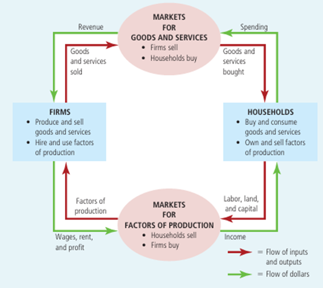
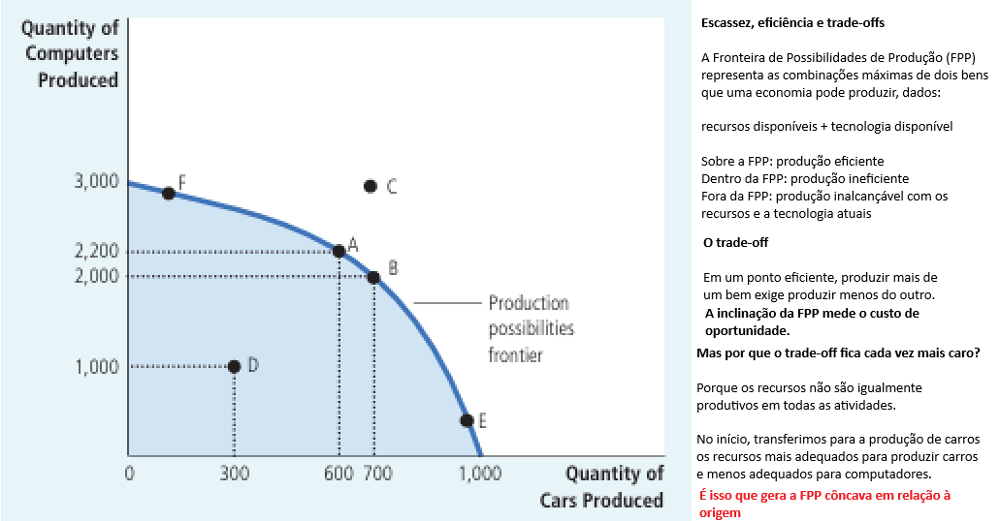
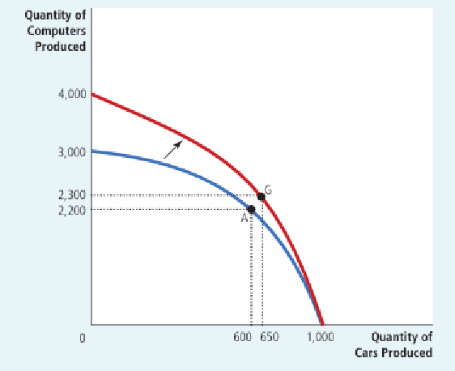

Aula 2 - Pensando como um economista
02 — O metodo científico: obseração - teoria - observação
07 — Análise positiva vs análise negativa
09 — Porquê os conselhos de economistas nem sempre são seguidos
10 — Critérios científicos divergentes
Economistas procuram estudar a economia com a objetividade de um cientista.
O objetivo é utilizar as evidências para confirmar, rejeitar ou aperfeiçoar explicações sobre como a economia funciona.
A ciência não é definida por laboratórios, tubos de ensaio ou telescópios, mas pelo método utilizado para compreender o mundo.
Ideia central: a economia é uma ciência social porque aplica o raciocínio científico ao estudo das escolhas individuais, dos mercados e da sociedade.
Teoria, observação e evidências Como o método científico funciona na Economia?
OBSERVAÇÃO Um fenômeno desperta uma pergunta.
↓
TEORIA Construímos uma explicação para o fenômeno.
↓
EVIDÊNCIAS Coletamos dados para confrontar a teoria com a realidade.
↓
AVALIAÇÃO As evidências podem fortalecer, enfraquecer ou levar à revisão da teoria.
Das ciências duras às ciências sociais:
Newton 🍎 Observação: objetos caem → Teoria: gravidade → Testes e novas observações
Economista 📈 Observação: preços aumentam rapidamente → Teoria: inflação pode estar relacionada ao crescimento da quantidade de moeda → Comparação de dados entre países e períodos
Mas há uma diferença importante:
Na Economia, experimentos controlados muitas vezes são inviáveis,impossíveis e/ou antiéticos. Por isso, economistas recorrem a:
dados observacionais acontecimentos históricos experimentos naturais
Simplificar para compreender
A realidade é complexa. Para estudá-la, cientistas constroem modelos baseados em hipóteses que a simplifica.
FÍSICA
Queda de uma esfera → supõe-se ausência de resistência do ar → o problema torna-se mais simples → sem comprometer significativamente a análise
ECONOMIA
Comércio internacional → supomos apenas 2 países e 2 bens → eliminamos detalhes desnecessários → conseguimos compreender os mecanismos fundamentais
A qualidade da hipótese depende da pergunta científica
Uma hipótese útil em determinada situação pode ser inadequada em outra.
Exemplo: política monetária expansionista e variação da inflação
Curto prazo → preços podem ser considerados relativamente rígidos, não capturando os efeitos totais da variação da quantidade de moeda.
Longo prazo → preços podem ser considerados flexíveis
Ideia-chave: a arte da análise econômica está em saber o que simplificar sem eliminar aquilo que importa.
a Economia utiliza modelos, para representar e compreender fenômenos complexos.
Modelos econômicos: → utilizam diagramas, gráficos e equações → omitem aspectos secundários da realidade → destacam as relações essenciais entre as variáveis
Todo modelo parte de hipóteses:
REALIDADE COMPLEXA ↓ HIPÓTESES E SIMPLIFICAÇÕES ↓ MODELO ↓ COMPREENSÃO DOS MECANISMOS ECONÔMICOS
Um modelo não precisa reproduzir perfeitamente a realidade para ser útil.
Na verdade, ao eliminar detalhes irrelevantes, o modelo permite enxergar com maior clareza aquilo que queremos estudar.
Ideia-chave: modelos são representações simplificadas da realidade, construídas para ajudar a explicar, analisar e prever fenômenos complexos.



← menuA Economia é tradicionalmente dividida em dois grandes campos:
Microeconomia Estuda como famílias e empresas tomam decisões e interagem em mercados específicos.
Macroeconomia Estuda os fenômenos da economia como um todo, como:
crescimento econômico; desemprego; inflação; políticas econômicas. Como se relacionam?
Micro e macro estão ligadas:
Os fenômenos macroeconômicos resultam das decisões de milhões de agentes individuais.
Micro → decisões individuais Macro → resultados agregados
observação importante:
Microeconomia e Macroeconomia estão intimamente ligadas, mas não são equivalentes.
A economia como um todo apresenta comportamentos próprios que não podem ser compreendidos apenas pela análise individual de famílias e empresas.
É justamente isso que justifica a Macroeconomia como campo específico de estudo. Caso contrário, bastaria estudar Microeconomia.
🔬 Pergunta 1 — Economia como ciência
Em que sentido a Economia pode ser considerada uma ciência?
📈 Pergunta 2 — Fronteira de Possibilidades de Produção
O que é a Fronteira de Possibilidades de Produção (FPP)?
🎯 Pergunta 3 — Pontos na FPP
Na FPP, o que representam os pontos eficientes, ineficientes e inalcançáveis?
🌵 Pergunta 4 — Deslocamento da FPP
Como uma seca afetaria a FPP de uma economia que produz alimentos e roupas?
🔎 Pergunta 5 — Microeconomia
O que é Microeconomia?
🌎 Pergunta 6 — Macroeconomia
O que é Macroeconomia?
⚖️ Pergunta 7 — Micro × Macro
Qual é a principal diferença entre Microeconomia e Macroeconomia?
Os economistas podem atuar tanto como cientistas, buscando compreender o funcionamento da economia, quanto como conselheiros políticos, discutindo como ela deveria funcionar.
Economia Positiva:
Busca descrever e explicar a realidade como ela é.
“O aumento do salário mínimo reduz o emprego.”
É uma afirmação sobre causa e efeito. Pode, em princípio, ser testada com dados e evidências. Pode ser considerada verdadeira ou falsa à luz das evidências.
Economia Normativa:
Busca discutir como a realidade deveria ser.
“O governo deveria aumentar o salário mínimo.”
Envolve uma prescrição ou recomendação. Depende de valores e objetivos. Não pode ser avaliada apenas com dados.
A distinção fundamental
Positiva → “Como o mundo é?” Normativa → “Como o mundo deveria ser?”
A análise positiva pode dar apoio a uma decisão normativa, mas não determina, sozinha, qual decisão deve ser tomada.
Economistas e a formulação de políticas: e em Brasília?
Brasília concentra economistas que participam diretamente da formulação, avaliação e execução de políticas públicas.
Onde estão os economistas em Brasília?
Ministério da Fazenda / Planejamento Política fiscal, tributação, orçamento e avaliação de políticas públicas.
Banco Central do Brasil Política monetária, inflação, juros e estabilidade financeira.
IPEA Pesquisa econômica aplicada e avaliação de políticas públicas.
Congresso Nacional Consultorias legislativas e de orçamento: análise dos impactos econômicos das propostas.
TCU e outros órgãos públicos Avaliação de políticas, eficiência do gasto público e produção de evidências para decisões governamentais.
Por que os economistas frequentemente discordam?
Harry Truman brincava que queria encontrar um “economista de um braço só”, porque seus economistas sempre respondiam:
“On the one hand… On the other hand…”
Isso não é necessariamente uma fraqueza da Economia.
Políticas públicas envolvem trade-offs: eficiência × equidade, presente × futuro, benefícios para alguns grupos × custos para outros.
“The ideas of economists and political philosophers, both when they are right and when they are wrong, are more powerful than is commonly understood. Indeed, the world is ruled by little else. Practical men, who believe themselves to be quite exempt from intellectual influences, are usually the slaves of some defunct economist. Madmen in authority, who hear voices in the air, are distilling their frenzy from some academic scribbler of a few years back.”
Economistas aconselham; governos decidem (Democracia não é necessariamente técnica)
Nos modelos econômicos, muitas vezes tratamos o governo como um “ente benevolente”:
Problema econômico → Análise → Melhor política → Implementação
Na realidade, identificar a melhor política econômica é apenas uma parte do processo.
O presidente precisa considerar diferentes perspectivas:
Assessoria: Questão principal
Econômica: Qual é a política economicamente mais adequada?
Comunicação: Como explicar a política ao público?
Imprensa: Como a mídia reagirá à proposta?
Legislativa: O Congresso aprovará? Que alterações serão necessárias?
Política: Quem apoiará ou se oporá? Qual será o impacto eleitoral?
Política econômica em uma democracia
Recomendação econômica ↓ Comunicação + opinião pública + mídia + Congresso + grupos de interesse + eleições ↓ Decisão política efetiva e coletiva
A recomendação do economista é um ingrediente importante,mas apenas um dos ingredientes de uma receita complexa.
Ideia central: a política considerada economicamente ótima nem sempre é a política politicamente viável.
“O aumento do salário mínimo eleva a renda dos trabalhadores que permanecem empregados.”
“O governo deveria aumentar o salário mínimo para reduzir a desigualdade.”
“Um aumento dos impostos sobre cigarros tende a reduzir o consumo de cigarros.”
“Mesmo que provoque alguma redução do emprego, aumentar o salário mínimo é uma política desejável porque melhora a vida dos trabalhadores de baixa renda.”
“Como um imposto sobre grandes fortunas pode reduzir a desigualdade, o governo deve implementá-lo.”
Discorda-se sobre como o mundo funciona
A Economia é uma ciência em permanente desenvolvimento. Economistas podem utilizar:
teorias diferentes + evidências diferentes + estimativas diferentes
e chegar a conclusões distintas.
Exemplo: imposto sobre renda × consumo
Economista A
Imposto sobre consumo → maior incentivo à poupança → maior investimento → maior produtividade e crescimento
Economista B
Imposto sobre consumo → pouca alteração na poupança → pequeno efeito sobre investimento e crescimento
O ponto fundamental:
A divergência está em uma questão empírica:
Quanto a poupança responde aos incentivos tributários?
Isso é uma divergência positiva: em princípio, novas evidências podem ajudar a resolvê-la.
Podemos concordar sobre os fatos e discordar sobre o que deve ser feito
Imagine duas pessoas que utilizam igualmente um serviço público:
| Peter | Paula | |
|---|---|---|
| Renda | $ 150.000 | $ 30.000 |
| Imposto | $ 15.000 | $ 6.000 |
| % a.e. | 10% | 20% |
Os fatos são conhecidos. Mas…
Essa distribuição é justa?
Paula deveria pagar menos porque possui renda menor?
Peter deveria pagar mais porque possui maior capacidade de pagamento?
A origem da renda de cada um deveria importar?
Aqui a ciência econômica não é suficiente
Não existe teste estatístico capaz de determinar o que é “justo”.
São questões que envolvem valores, prioridades e concepções de justiça.
Portanto, aperfeiçoar a ciência econômica pode reduzir algumas divergências positivas, mas não elimina divergências normativas.
Economistas discordam tanto assim?
Apesar das diferenças de julgamento científico e de valores, o grau de divergência entre economistas é frequentemente superestimado.
Há amplo consenso em muitas questões
Pesquisas com economistas encontraram forte concordância em diversas proposições:
Proposição
Controle de aluguéis reduz quantidade e qualidade das moradias disponíveis: 93% Tarifas e cotas de importação geralmente reduzem o bem-estar econômico: 93% Política fiscal estimula uma economia abaixo do pleno emprego: 90% Crescimento econômico aumenta o bem-estar em países desenvolvidos: 88% Grandes déficits públicos têm efeitos adversos sobre a economia: 83% Salário mínimo aumenta o desemprego entre jovens e trab pouco qualificados: 79%
Então por que políticas rejeitadas por economistas persistem?
Consenso entre economistas ≠ adoção da política recomendada
Recomendações econômicas ↓ Processo político + grupos de interesse + opinião pública + valores sociais ↓ Política efetivamente adotada
Ideia central: Economistas podem discordar, mas concordam sobre muito mais coisas do que a percepção pública costuma sugerir.
Mesmo quando existe consenso técnico, isso não significa que ele será automaticamente transformado em política pública.
Economia é mais do que números, gráficos e modelos
Ao longo deste capítulo, vimos que pensar como um economista significa:
Simplificar a realidade → utilizar modelos para compreender um mundo complexo.
Distinguir fatos de valores → separar afirmações positivas das normativas.
Reconhecer os limites da análise econômica → economistas podem discordar sobre evidências, teorias e valores.
Compreender o papel do economista → como cientista, busca explicar o mundo; → como assessor, ajuda a formular políticas — mas não decide sozinho.
O desafio de Keynes:
O grande economista deve ser, em alguma medida, matemático, historiador, estadista e filósofo.
Ele precisa conectar:
Passado ↔︎ Presente ↔︎ Futuro Abstrato ↔︎ Concreto Teoria ↔︎ Mundo real
Pensar como um economista é aprender a enxergar não apenas o que acontece, mas por que acontece e quais são as consequências das nossas escolhas.
1. CEBRASPE — SLU/DF — 2019
“A economia opera no interior da fronteira de possibilidades de produção quando o hiato do produto nacional bruto é elevado.”
2. CEBRASPE — TJ/AL — Analista Judiciário/Economia
Sobre a FPP, assinale a alternativa correta:
3. CEBRASPE — MEC — Especialista em Regulação
“Um ponto localizado no interior da fronteira de possibilidades de produção é factível, mas não eficiente, uma vez que pressupõe subemprego dos fatores de produção existentes.”
Certo ou Errado?
4. CEBRASPE — MEC — Especialista em Regulação
Ao deslocar progressivamente a produção ao longo de uma FPP côncava, aumentando a produção do bem B, “o custo de oportunidade é cada vez menor em função dos ganhos de escala obtidos na produção de B”.
5. CEBRASPE — Banco da Amazônia — Economista
“As indústrias que estiverem em pleno emprego dos seus fatores de produção se encontrarão sobre suas fronteiras de possibilidades de produção.”
6. Considere:
I. Um aumento do imposto sobre cigarros reduz seu consumo.
Como o consumo de cigarros gera custos para a sociedade, o governo deveria aumentar sua tributação.
Uma elevação do salário mínimo pode alterar o nível de emprego dos trabalhadores menos qualificados.
A redução da desigualdade deve ter prioridade sobre ganhos de eficiência econômica.
São afirmações normativas apenas:
7. Por que os economistas divergem?
Dois economistas concordam que determinada política redistributiva elevará a renda dos 20% mais pobres em 8%, reduzirá a renda dos 20% mais ricos em 3% e provocará pequena perda de eficiência. O primeiro recomenda sua adoção; o segundo, sua rejeição.
A divergência entre eles decorre necessariamente:
Gabarito
Questão 1 — CEBRASPE — SLU/DF — 2019
“A economia opera no interior da fronteira de possibilidades de produção quando o hiato do produto nacional bruto é elevado.”
Certo ou Errado?
Tip
Gabarito: CERTO
A economia opera no interior da Fronteira de Possibilidades de Produção (FPP) quando há recursos produtivos ociosos ou subutilizados.
Se o hiato do produto é elevado, isso significa que o produto efetivo está significativamente abaixo do produto potencial. Em outras palavras, a economia poderia produzir mais com os recursos e a tecnologia disponíveis.
Logo, ela está em um ponto interior à FPP.
Ideia-chave: Interior da FPP → recursos ociosos → produto efetivo abaixo do potencial.
Questão 2 — CEBRASPE — TJ/AL — Analista Judiciário/Economia
Sobre a FPP, assinale a alternativa correta:
Tip
Gabarito: C
A) ERRADA. Avanços tecnológicos aumentam a capacidade produtiva da economia. Portanto, tendem a deslocar a FPP para fora/direita.
B) ERRADA. Guerras e calamidades podem destruir capital físico, infraestrutura e recursos humanos. Assim, reduzem a capacidade produtiva e tendem a deslocar a FPP para dentro/esquerda.
C) CORRETA. Um ponto interior é factível, pois pode ser produzido com os recursos disponíveis, mas é ineficiente, porque parte desses recursos está desempregada ou subutilizada.
D) ERRADA. Estar sobre a FPP significa utilizar os recursos disponíveis de maneira eficiente. Não significa que os fatores estejam igualmente distribuídos entre os dois bens.
E) ERRADA. Com os recursos e a tecnologia atualmente disponíveis, pontos exteriores à FPP são inatingíveis.
| Posição | Significado |
|---|---|
| Interior da FPP | Factível, mas ineficiente |
| Sobre a FPP | Factível e eficiente |
| Exterior à FPP | Atualmente inatingível |
Questão 3 — CEBRASPE — MEC — Especialista em Regulação
“Um ponto localizado no interior da fronteira de possibilidades de produção é factível, mas não eficiente, uma vez que pressupõe subemprego dos fatores de produção existentes.”
Certo ou Errado?
Tip
Gabarito: CERTO
Um ponto localizado no interior da FPP é:
Isso pode ocorrer em situações de desemprego, máquinas paradas ou baixa utilização da capacidade instalada.
Ideia-chave: Interior da FPP → possível, mas ineficiente.
Questão 4 — CEBRASPE — MEC — Especialista em Regulação
Ao deslocar progressivamente a produção ao longo de uma FPP côncava, aumentando a produção do bem B:
“O custo de oportunidade é cada vez menor em função dos ganhos de escala obtidos na produção de B.”
Certo ou Errado?
Warning
Gabarito: ERRADO
Na representação tradicional de uma FPP côncava em relação à origem, temos custos de oportunidade crescentes.
À medida que a economia transfere cada vez mais recursos para a produção do bem B, precisa utilizar recursos progressivamente menos adequados à sua produção.
Consequentemente, para produzir unidades adicionais de B, será necessário sacrificar quantidades cada vez maiores do bem A.
Por exemplo:
| Aumento de B | Sacrifício de A |
|---|---|
| +10 | −2 |
| +10 | −4 |
| +10 | −7 |
Portanto, o custo de oportunidade de B aumenta à medida que sua produção é expandida.
O erro da afirmação está principalmente em dizer que o custo de oportunidade seria “cada vez menor”.
Ideia-chave: FPP côncava → custo de oportunidade crescente.
Questão 5 — CEBRASPE — Banco da Amazônia — Economista
“As indústrias que estiverem em pleno emprego dos seus fatores de produção se encontrarão sobre suas fronteiras de possibilidades de produção.”
Certo ou Errado?
Tip
Gabarito: CERTO
Se uma indústria está em pleno emprego de seus fatores de produção e utiliza esses recursos de maneira eficiente, sua produção estará situada sobre a FPP.
| Posição | Situação |
|---|---|
| Interior | Recursos ociosos / ineficiência |
| Sobre a FPP | Eficiência produtiva / pleno emprego |
| Exterior | Produção atualmente inatingível |
Portanto, a afirmação está correta.
Questão 6 — Economia Positiva × Economia Normativa
Considere:
I. Um aumento do imposto sobre cigarros reduz seu consumo.
Como o consumo de cigarros gera custos para a sociedade, o governo deveria aumentar sua tributação.
Uma elevação do salário mínimo pode alterar o nível de emprego dos trabalhadores menos qualificados.
A redução da desigualdade deve ter prioridade sobre ganhos de eficiência econômica.
São afirmações normativas apenas:
Tip
Gabarito: C — II e IV
A distinção fundamental é:
I. POSITIVA.
“Um aumento do imposto sobre cigarros reduz seu consumo.”
É uma afirmação sobre causa e efeito que pode, em princípio, ser confrontada com dados.
II. NORMATIVA.
“O governo deveria aumentar sua tributação.”
A palavra “deveria” revela uma recomendação e um julgamento sobre o que seria desejável.
III. POSITIVA.
“Uma elevação do salário mínimo pode alterar o nível de emprego…”
É uma hipótese sobre causa e efeito passível de investigação empírica.
IV. NORMATIVA.
“A redução da desigualdade deve ter prioridade…”
Existe explicitamente um julgamento de valor sobre qual objetivo econômico deve ser priorizado.
Portanto:
II e IV → alternativa C.
Questão 7 — Por que os economistas divergem?
Dois economistas concordam que determinada política redistributiva:
O primeiro recomenda sua adoção; o segundo, sua rejeição.
A divergência entre eles decorre necessariamente:
Tip
Gabarito: D
Os dois economistas concordam sobre os efeitos da política.
Portanto, não existe divergência sobre a análise positiva:
A divergência aparece na avaliação desses resultados.
Um economista considera que o ganho de equidade compensa a perda de eficiência e recomenda a política.
O outro atribui maior importância à eficiência e rejeita a política.
Logo, a diferença está nos julgamentos normativos acerca dos resultados considerados desejáveis.
A) ERRADA. Eles concordam sobre os efeitos da política.
B) ERRADA. Não existe necessariamente erro metodológico.
C) ERRADA. A questão já estabelece os efeitos da política.
D) CORRETA. A divergência decorre de diferentes julgamentos normativos.
E) ERRADA. Pode existir consenso científico sobre os efeitos de uma política e, ainda assim, divergência sobre sua conveniência.
Ideia-chave: Economistas podem concordar sobre o que acontecerá (análise positiva) e discordar sobre o que deveria ser feito (análise normativa).